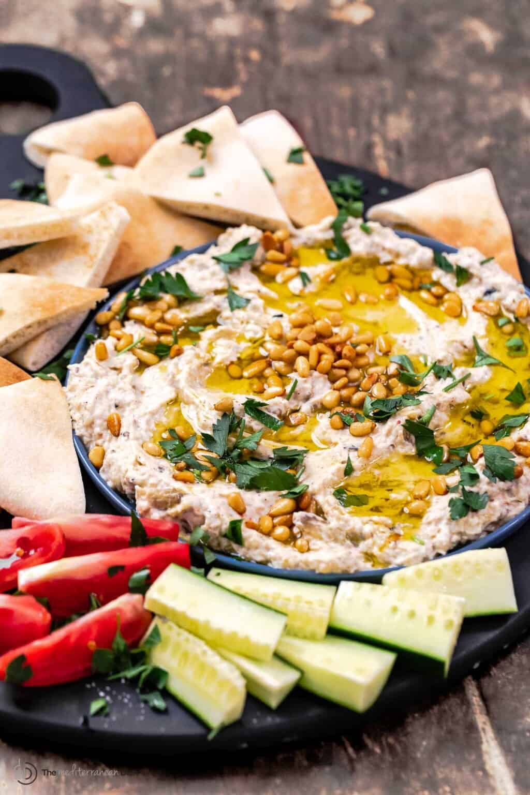

Baba Ghanoush

Description
Baba ganoush--also known as baba ganouj, muttabal, or salat hatzilim--is a smoky, rich, and creamy eggplant dip, traditionally made by mixing tender roasted (or charred) eggplant and nutty tahini with garlic, citrus, and spices.
Ingredients
- Eggplant
- Tahini paste
- Garlic
- Lemon juice
- Greek Yogurt
- Seasonings
- Extra virgin olive oil.
- Garnish
Steps
- Grill or bake the eggplant. Grill the eggplant whole over an open flame over medium-high heat (I used my gas burner, but you can cook it on the grill), turning occasionally, with a pair of tongs, until the eggplant has fully charred on the outside and the flesh has collapsed and softened (about 15 to 20 minutes).
- Cool and Drain Well.
- Peel off the skin. When cool enough to handle, peel the charred skin off the eggplant and the stem and discard (Note: if you baked the eggplant instead, you may simply need to scoop out the flesh with a spoon.
- Gently mix the eggplant with the tahini and remaining ingredients. At this point, make sure your eggplant is fully cooled and is rid of excess water, then transfer it to a large bowl. Add in the tahini (a good ¼ cup for rich and nutty flavor), minced garlic, fresh lemon juice, and, the optional secret ingredient, about 1 tablespoon of Greek yogurt. Season with a good pinch of kosher salt, and if you like, a little sumac and Aleppo pepper or red pepper flakes, if you like heat. Using a wooden spoon, mix gently to combine.
- Chill. If you have the time, cover the baba gnoush and chill it in the fridge for a few minutes or sit it aside while you work on something else
- Serve. Spread the baba ganoush on a serving rimmed plate or bowl and drizzle with a good bit of extra virgin olive oil. Finish with toasted pine nuts and fresh parsley.